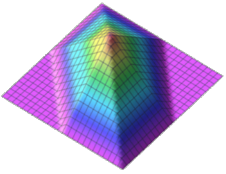
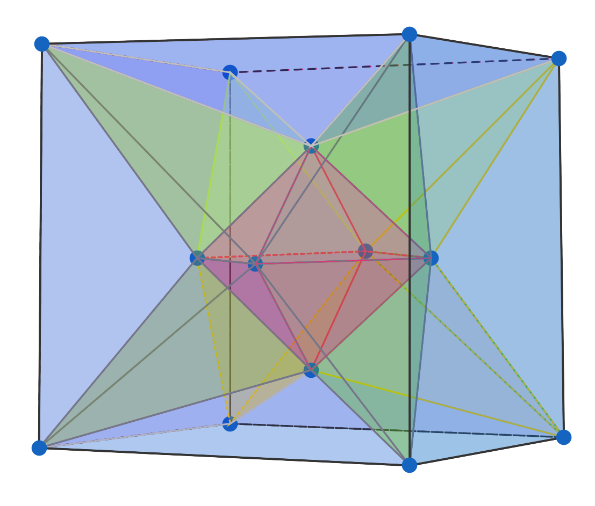
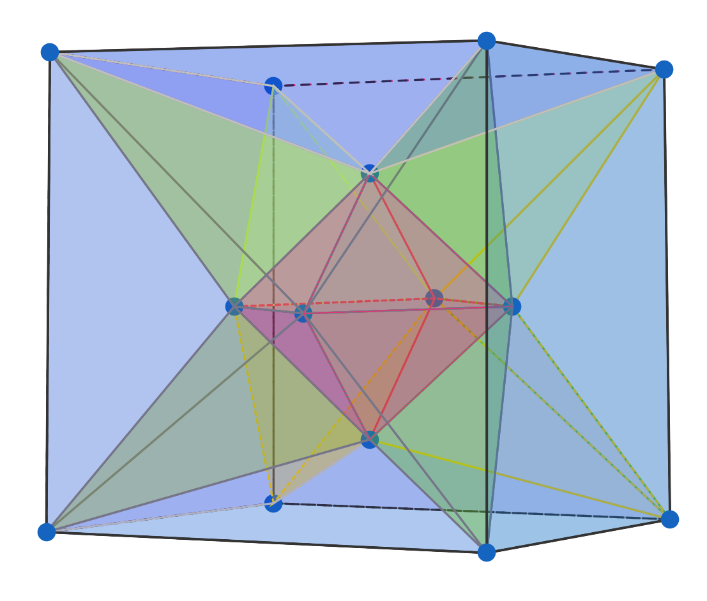
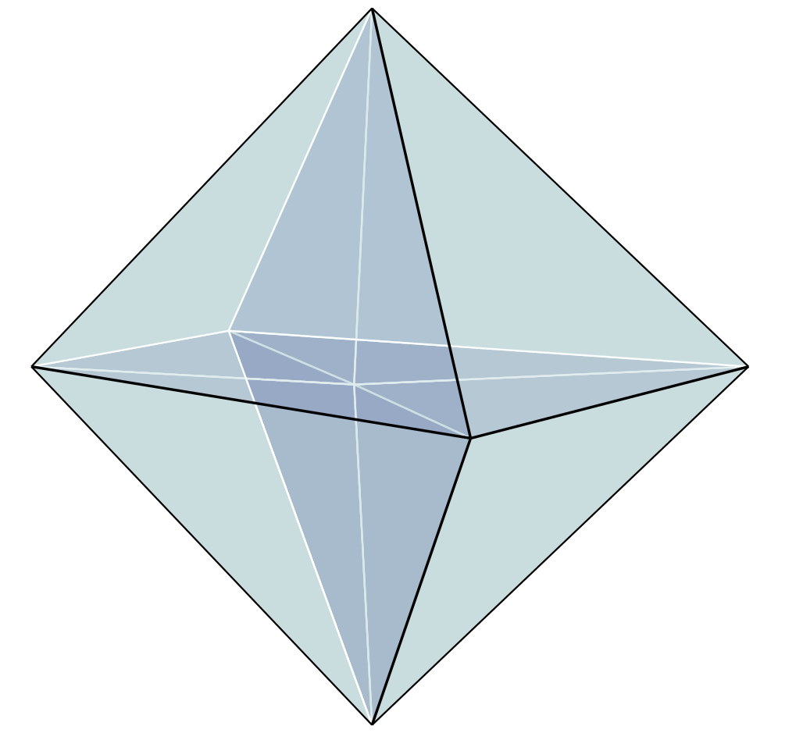
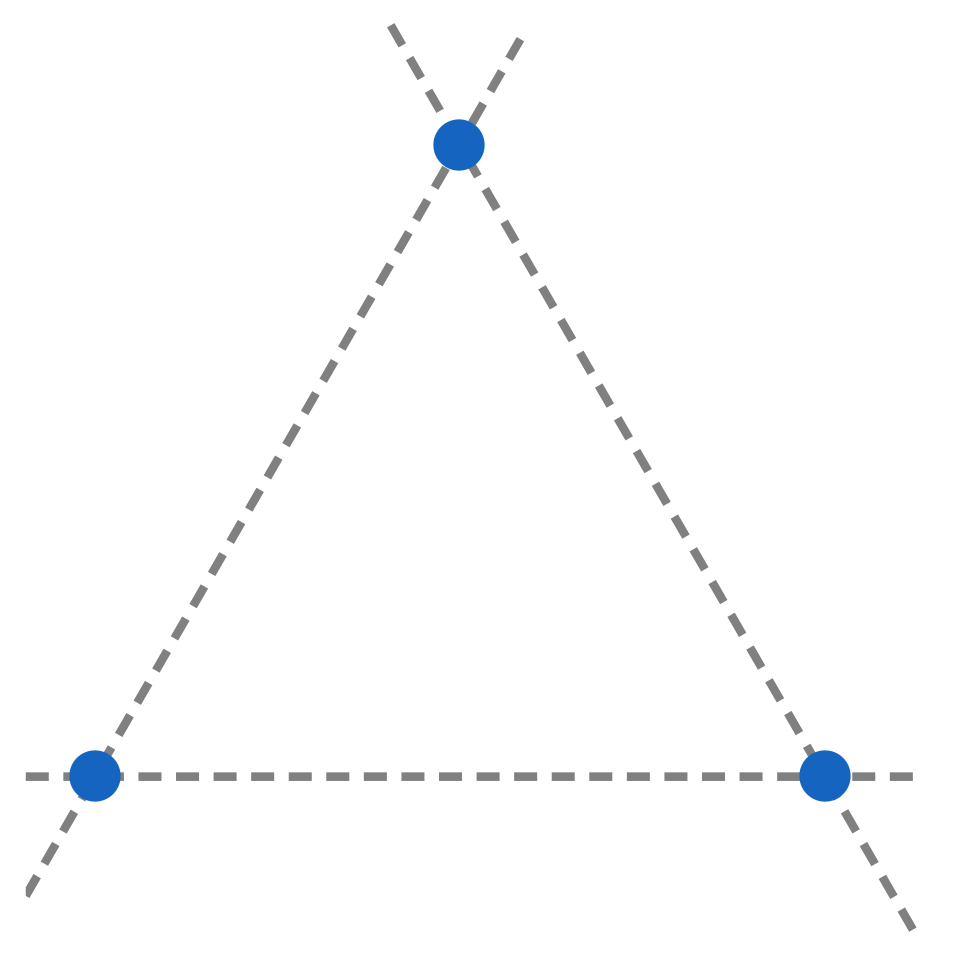
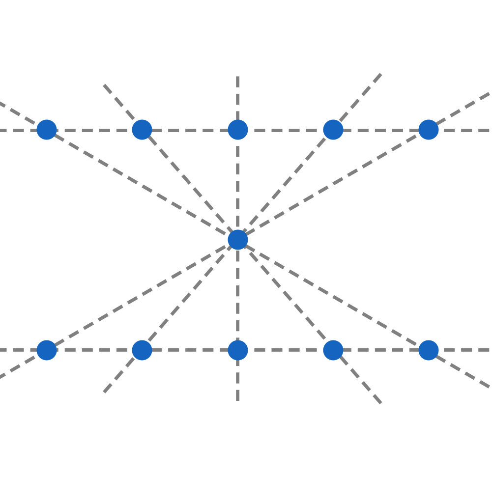

Funciones de polinomios sobre complejos simpliciales
Nelly VillamizarDepartamento de Matemáticas, Universidad de Swansea
-
Días de combinatoria, Bucaramanga, 2023
Splines


Método de los elementos finitios (MEF) para resolver EDP





Análisis isogeométrico= CAGD + MEF
Hughes, Cottrell, and Bazilevs (2005)


Funciones de polinomios a trozos
\[\mathbf{p}_1=(1-t)\mathbf{c}_1+t\mathbf{c}_2\qquad
\mathbf{p}_2=(1-t)\mathbf{c}_2+t\mathbf{c}_3\\
\mathbf{p}_3=(1-t)\mathbf{c}_3+t\mathbf{c}_4\\
\mathbf{q}_1=(1-t)\mathbf{p}_1+t\mathbf{p}_2\qquad
\mathbf{q}_2=(1-t)\mathbf{p}_2+t\mathbf{p}_3\]


Splines multivariados
Una pareja $(f,g)$ es $C^r$-continua a través de una cara común si y sólo si \[f - g = \ell^{r+1} h \Leftrightarrow f-g\in \langle \ell^{r+1}\rangle \] Strang (1973) Billera (1988)
 

Splines e ideales de puntos gordos
$\ell=a x+b y+c z\quad \longleftrightarrow \quad P = [a :b:c]\in \mathbb{P}^ 2 $
$\langle \ell_1^{r+1}, \cdots, \ell_m^{r+1}\rangle_d \quad \longleftrightarrow \quad \wp_1^{d-r}\cap\cdots\cap\wp_m^{d-r}$


Splines, Algebra y Combinatoria



El grafo dual





- Splines en una variable, curvas de Bézier
- Complejos simpliciales, variedades algebracas, ordenes monomiales, bases de Gröbner.
- Grafo dual, anillo de Stanley-Reisner.